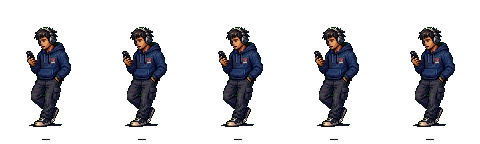
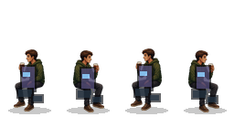
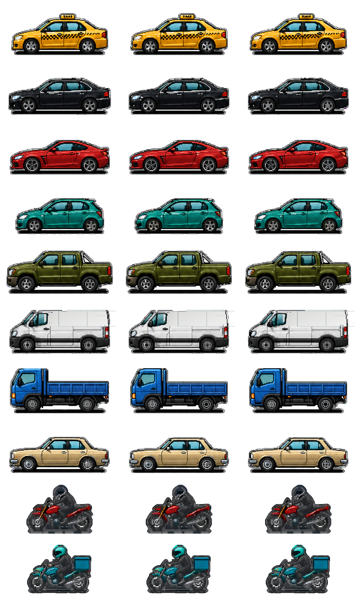
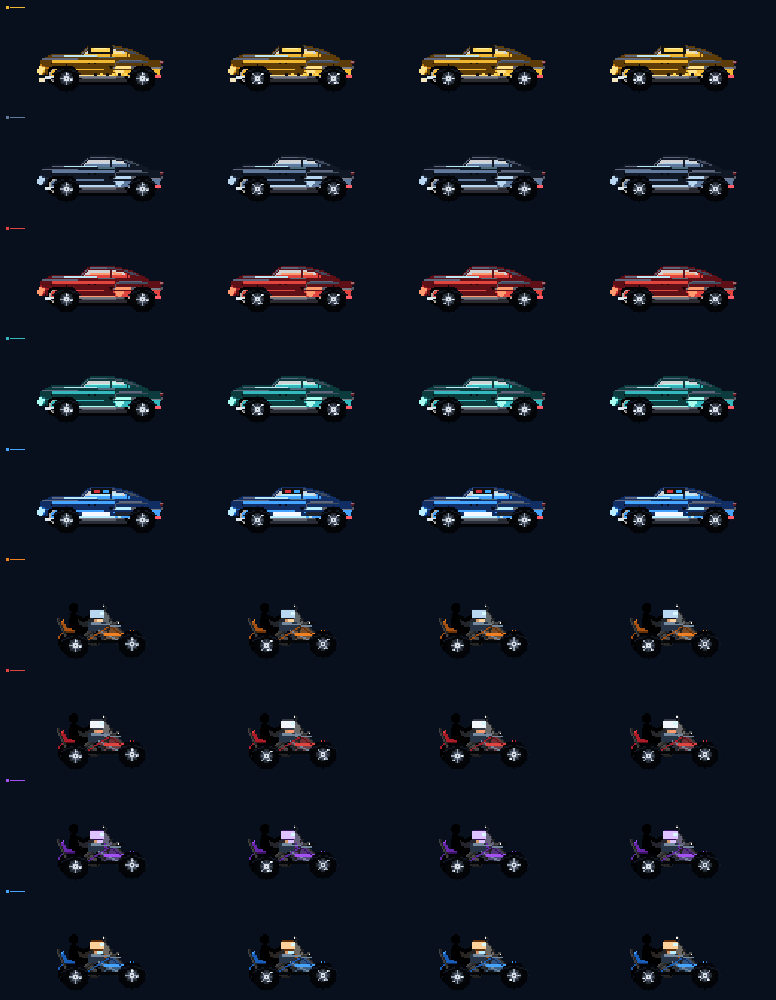
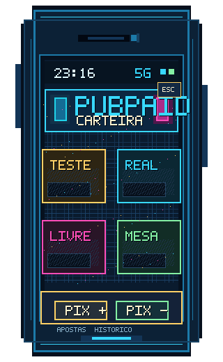
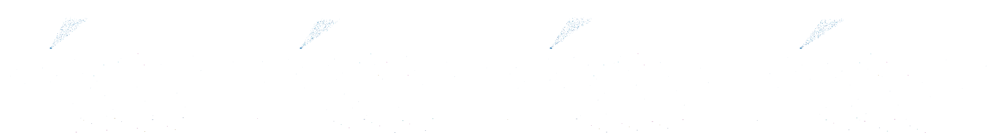
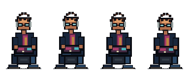
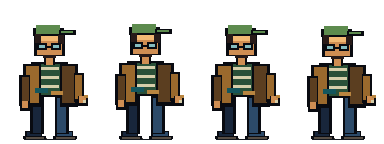

Rua, paleta e luz
Neon ciano/magenta, janela ambar, asfalto molhado e silhueta urbana sao a identidade do PubPaid 2. Cenario continua sendo o comparador principal de densidade.
Esta pagina e uma mesa de decisao. Ela nao carrega Phaser, nao muda `BootScene`, nao troca sprites do jogo e nao publica PubPaid.
O norte e a rua neon chuvosa com adultos proporcionais, sombras de chao e leitura de bairro. As camadas abaixo usam assets existentes apenas para comparar baseline, volume e contraste.






A direcao resolve a linguagem antes de asset novo: fundo como ancora, personagens proporcionais, menos props chapados e veiculos com sheet refeito fora do runtime.
Neon ciano/magenta, janela ambar, asfalto molhado e silhueta urbana sao a identidade do PubPaid 2. Cenario continua sendo o comparador principal de densidade.
Manter escala 105-130 px no primeiro plano e 50-75 px no fundo. Remover leitura de placa/bloco solto cobrindo corpo e desenhar acessorios integrados ao sprite.
Fica apenas como estado atual restaurado. A linha final deve sair de sprites bitmap por veiculo, com hard-alpha, motos menos plasticas e dimensoes verificaveis em preview.
A carteira em PNG ja aponta o caminho certo para DOM/HUD: moldura bitmap, pixels visiveis, botoes retos e nenhuma cara de dashboard moderno.
Esta area organiza o que ja existe. Ela nao aprova integracao automatica; so separa norte visual, candidatos e dividas.
norte Casa com a fantasia: bairro chuvoso, neon, profundidade 2D e foco claro na entrada do pub.

escala Serve para baseline e proporcao. O proximo pack de NPCs precisa igualar pe, sombra, densidade e direcao de luz.

refazer Os corpos pertencem ao universo, mas os blocos de prop parecem colados. Proxima passada: silhueta limpa antes de detalhe.
candidato Boa ideia de mundo. Precisa trocar postura/props por desenho manual integrado antes de ser chamado de final.
saida planejada Mantido por historico do runtime restaurado. A direcao nova deve nascer em preview e so depois substituir com aprovacao.

norte de trafego Melhor leitura de carro/moto como sprite bitmap. Antes de integrar, gerar pack individual verificavel e alinhar com a rua.

padrao UI UI deve continuar parecendo objeto do jogo. Qualquer painel novo precisa virar bitmap ou CSS pixelado muito simples.

checar Pode servir para chuva/reflexo discreto, mas nao deve virar muleta para esconder falta de asset coerente.



nao usar Guardados so como comparacao. A leitura continua chapada demais para ser elenco final de frente.
Estas regras transformam a direcao em trabalho executavel sem mexer no jogo vivo.